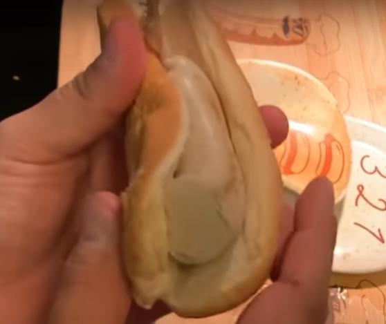

The Earth Sausage

Description
The earth sausage isn't as wellknown as the other as the air or the water sausages.
Although I don't want this to deter you from trying out this amazing dish as well.
In my humble opinion this one has the best texture and flavour among all the other sausages, so give it a try.
Ingredients
- High Quality Sausage Casing
- Food Grade Diatomaceous Earth
- Two Tablespoons Olive Oil
- Water
Steps
- First we have to mix the diatomaceous earth with water that is half it's volume
- After mixing it should have a gooey texture
- Fill the casing with your mixing product and tie the open end
- Oil your pan and start cooking the sausage on high heat
- Cook until the sausage is rock hard
- Your sausage should be ready to eat
- As always, you can either present it naked or with a bun